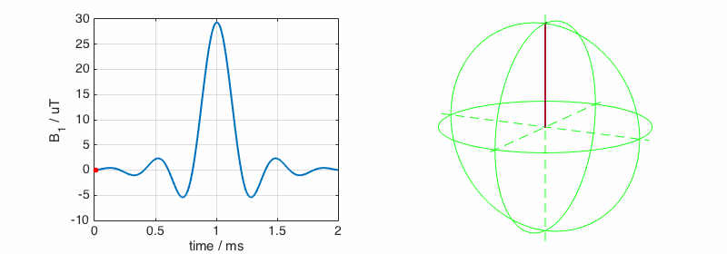
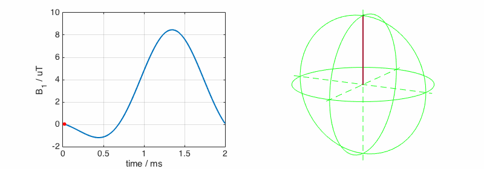
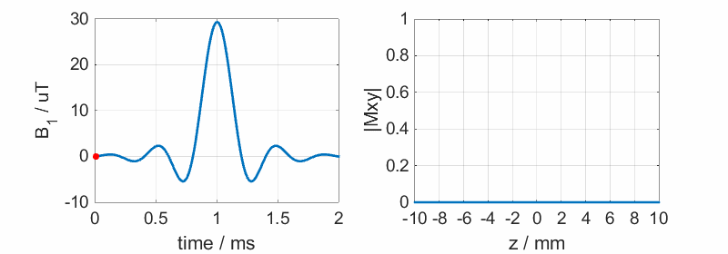
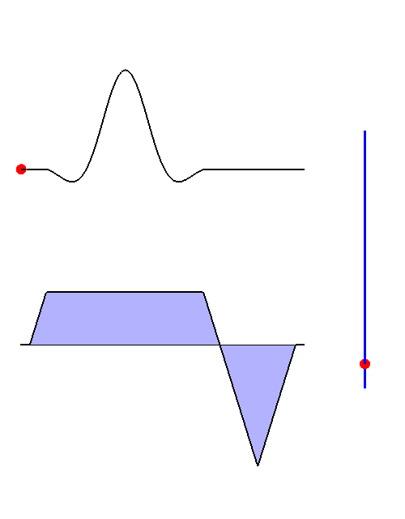
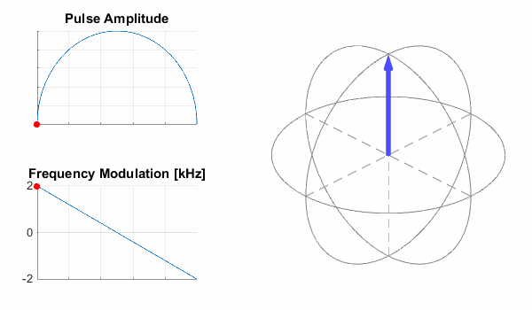
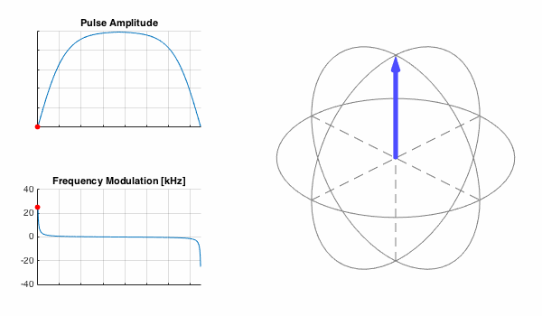
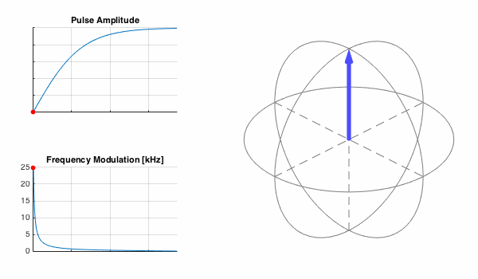
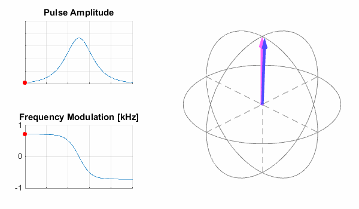

<script type="text/javascript" async
src="https://cdn.mathjax.org/mathjax/latest/MathJax.js?config=TeX-MML-AM_CHTML">
</script>
# RF pulse design and simulations: supplementary animations
### RF excitation, NMR basics
This follows on from the introductory NMR material on the [introductory page](teaching-mri-intro.html). **In all of the following animations, the blue arrow
corresponds to the effective magnetic field, while the pink arrow is the magnetization
vector,** \\(\mathbf{M}\\).
To recap, excitation can be viewed either in the lab frame:
<img src="images/Bloch_Bminus_lab.gif" width="50%">
or in a rotating reference frame:
<img src="images/Bloch_Bminus_rot.gif" width="50%">
This frame can be moving at the local resonance frequency, the RF frequency (these could be different), or indeed any other frequency. More on that in the lecture notes.
### Shaped RF pulses
RF pulses can be shaped, and this usually helps improve their selectivity in frequency
(or space via an applied gradient). On resonance, slice selective pulses simply
tip \\(\mathbf{M}\\) back and forth. Here is a long sinc pulse

and a heavily truncated one:

### Slice selection
A time-resolved view of slice selection (here we see just the transverse magnetisation):

A k-space view of slice selection:

### Frequency-swept and adiabatic RF pulses
Frequency-swept pulses are frquently used to invert magnetization. Their properties
differ quite a lot from the simple pulses shown above. Here is the magnetization
trajectory from a simple pulse whose frequency is swept linearly, and whose magnitude is
modified to maintain constant effective magnetic field strength in the rotating frame
of the magnetization:

The dynamics are confusing to look at, but it is clear that \\(\mathbf{M}\\) does
end up being inverted by this pulse. The picture would be simpler if we transform
to the rotating frame moving at the instantaneous frequency of the RF pulse, rather
than the resonance frequency of the magnetization. We can achieve this in part by
making the camera move at the right speed:
Notice how the camera changes direction half way through - this is because of the
frequency offset changing sign. Now the dynamics looks simpler, but the trails we have drawn are hard to interpret. Finally, we can do a better job by simulating directly
in the rotating frame of the RF pulse:
The magnetization precesses around the effective magnetic field, which is swept down as the frequency of the pulse is swept. As long as the sweep is done slowly compared to the speed of rotation of \\(\mathbf{M}\\) about \\(\mathbf{B_{eff}}\\), \\(\mathbf{M}\\) remains locked-in and an inversion is achieved.
This analysis shows how adiabatic pulses work, however constant sweeps like this
are not commonly used. An improved version is the Adiabatic Full Passage (AFP) which
uses a time-variable frequency sweep that is designed to effectively invert \\(\mathbf{M}\\). Here we
see it in the magnetization frame of reference:

Switching to the FM reference frame we see that the effective magnetic field is swept
such that \\(\mathbf{M}\\) follows it closely:
This type of pulse can also be stopped half way, to make a \\(\frac{\pi}{2}\\) rotation,
called an Adiabatic Half Passage (AHP):

In practical terms, the most popular type of adiabatic pulse is the
hyperbolic secant pulse, which can achieve nice slice selectivity (and can be used as
a refocusing pulse). Here is an example of the dynamics of \\(\mathbf{M}\\) in the rotating frame of the magnetization:

and in the frame of the pulse:
(c) Shaihan Malik 2017